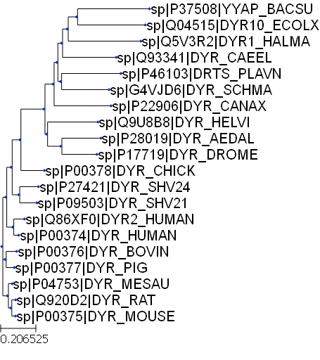

from ete3 import Tree3 Phylogenetic analysis
One of the frequently used techniques in molecular evolution in phylogenetic analysis. It involves studing the relationship between different organisms based on the similarity between homologous genes. A phylogenetic tree is a pictorial representaion of this relationship. Here we’ll use a set of protein sequences to generate a multiple sequence alignment and then based on the distance (which is inverse of similarity) between different sequences we’ll construct a phylogenetic tree. There are multiple libraries available to do phylogenetic analysis. We’ll use ete3 library which can be installed using the command pip install --upgrade ete3. In addition, to render tree we also need PyQt which can be installed via pip install PyQt5.
3.1 The Newick format
One of the frequently used format for tree representation in Newick format. This is a text based notation of tree structures. In this, nodes are specified as comma separated values within parantheses and ends with a semi-colon. Leaf nodes and internal can have names and branch length can be specified as well. Below are some examples of tree constructed using the Tree() function. The format attribute of this function need to be changed when constructing tree with flexible newick format.
t = Tree( "((a,b),c);" )
print(t)
/-a
/-|
--| \-b
|
\-c#Tree with internal nodes
t2 = Tree( "((a,b)m,c)n;", format=1 )
print(t2)
/-a
/-|
--| \-b
|
\-cThe show() function generates a graphical representation of the tree and render() function can used to save an image of the tree. This function has keyword attributes to specify resolution, width and height of the image. To show the tree within notebook we call the render() function with %%inline argument.
t.render("tree1.png", dpi=300)
t.render("%%inline")To get the names of all the nodes in a tree we can use traverse() function to interate through the nodes of the tree and print their names. To get a list of only the leaf nodes, get_leaves() can be used.
print([n.name for n in t2.traverse()])
print([x.name for x in t2.get_leaves()])['n', 'm', 'c', 'a', 'b']
['a', 'b', 'c']3.2 Loading free from a file
We can create a tree object by loading a tree in newick format. In this example we’ll use a phylogenetic tree generated after multiple sequence alignment of protein sequences using the MUSCLE program.
dhfr_tree = Tree('dhfr_20.tree')print(dhfr_tree)
/-sp|P37508|YYAP_BACSU
/-|
/-| \-sp|Q04515|DYR10_ECOLX
| |
/-| \-sp|Q5V3R2|DYR1_HALMA
| |
/-| \-sp|Q93341|DYR_CAEEL
| |
| | /-sp|P46103|DRTS_PLAVN
/-| \-|
| | \-sp|G4VJD6|DYR_SCHMA
| |
/-| \-sp|P22906|DYR_CANAX
| |
| | /-sp|Q9U8B8|DYR_HELVI
| \-|
/-| | /-sp|P28019|DYR_AEDAL
| | \-|
| | \-sp|P17719|DYR_DROME
/-| |
| | \-sp|P00378|DYR_CHICK
| |
| | /-sp|P27421|DYR_SHV24
/-| \-|
| | \-sp|P09503|DYR_SHV21
| |
| | /-sp|Q86XF0|DYR2_HUMAN
| \-|
| \-sp|P00374|DYR_HUMAN
--|
| /-sp|P00376|DYR_BOVIN
|--|
| \-sp|P00377|DYR_PIG
|
| /-sp|P04753|DYR_MESAU
\-|
| /-sp|Q920D2|DYR_RAT
\-|
\-sp|P00375|DYR_MOUSEdhfr_tree.render("%%inline")
3.3 Decorating trees
There are function available to add style to the nodes and branches of a tree to highlight specific aspects of the phylogenetic relationship. For example, to highlight a particular clade within the tree, we can add a background color. We can also alter the layout of the tree using the functions available in the TreeStyle class. Similarly, nodes can be customized using NodeStyle.
from ete3 import TreeStyle
ts = TreeStyle()
ts.show_leaf_name = True
ts.rotation = 90
dhfr_tree.render("%%inline",tree_style=ts)#Circular layout
circular_style = TreeStyle()
circular_style.mode = "c"
dhfr_tree.render("%%inline", tree_style=circular_style)Quiz: Write a code to generate a phylogenetic tree in a semi-circular layout (as shown below).
Show answer
#semi-circular layout
circular_style.arc_start = -180
circular_style.arc_span = 180
dhfr_tree.render("%%inline", tree_style=circular_style)The node within a tree can be highlighted by changing the text color or the background color.
from ete3 import Tree, faces, AttrFace, TreeStyle, NodeStyle
nst1 = NodeStyle()
nst1["bgcolor"] = "LightSteelBlue"
nst2 = NodeStyle()
nst2["bgcolor"] = "DarkSeaGreen"
n1 = dhfr_tree.get_common_ancestor("sp|Q86XF0|DYR2_HUMAN", "sp|P00374|DYR_HUMAN")
n1.set_style(nst1)
n2 = dhfr_tree.get_common_ancestor("sp|Q04515|DYR10_ECOLX", "sp|P22906|DYR_CANAX")
n2.set_style(nst2)
dhfr_tree.render("%%inline", tree_style=circular_style)3.4 Adding sequence alignment to tree
For situations where we would like to show sequence alignment (or a subset of alignment) along with the phylogenetic tree, we can use PhyloTree class. Here, instead of contructing an object of class Tree, the tree in instantiated as an object of the class PhyloTree. This allow to attach a multiple sequence alignment to the phylogenetic tree.
from ete3 import PhyloTreealign_tree2 = PhyloTree("( HBAZ_CAPHI:0.36620, HBA_HUMAN:0.07042, HBA_MOUSE:0.07042);")align_txt = '''
>HBAZ_CAPHI
MSLTRTERTIILSLWSKISTQADVIGTETLERLFSCYPQAKTYFPHFDLHSGSAQLRAHG
SKVVAAVGDAVKSIDNVTSALSKLSELHAYVLRVDPVNFKFLSHCLLVTLASHFPADFTA
DAHAAWDKFLSIVSGVLTEKYR
>HBA_HUMAN
MVLSPADKTNVKAAWGKVGAHAGEYGAEALERMFLSFPTTKTYFPHFDLSHGSAQVKGHG
KKVADALTNAVAHVDDMPNALSALSDLHAHKLRVDPVNFKLLSHCLLVTLAAHLPAEFTP
AVHASLDKFLASVSTVLTSKYR
>HBA_MOUSE
MVLSGEDKSNIKAAWGKIGGHGAEYGAEALERMFASFPTTKTYFPHFDVSHGSAQVKGHG
KKVADALASAAGHLDDLPGALSALSDLHAHKLRVDPVNFKLLSHCLLVTLASHHPADFTP
AVHASLDKFLASVSTVLTSKYR
'''align_tree2.link_to_alignment(alignment=align_txt, alg_format="fasta")print(align_tree2)
align_tree2.render("%%inline")
#align_tree2.render(file_name="tree_align.png", dpi=300)
/-HBAZ_CAPHI
|
--|--HBA_HUMAN
|
\-HBA_MOUSE